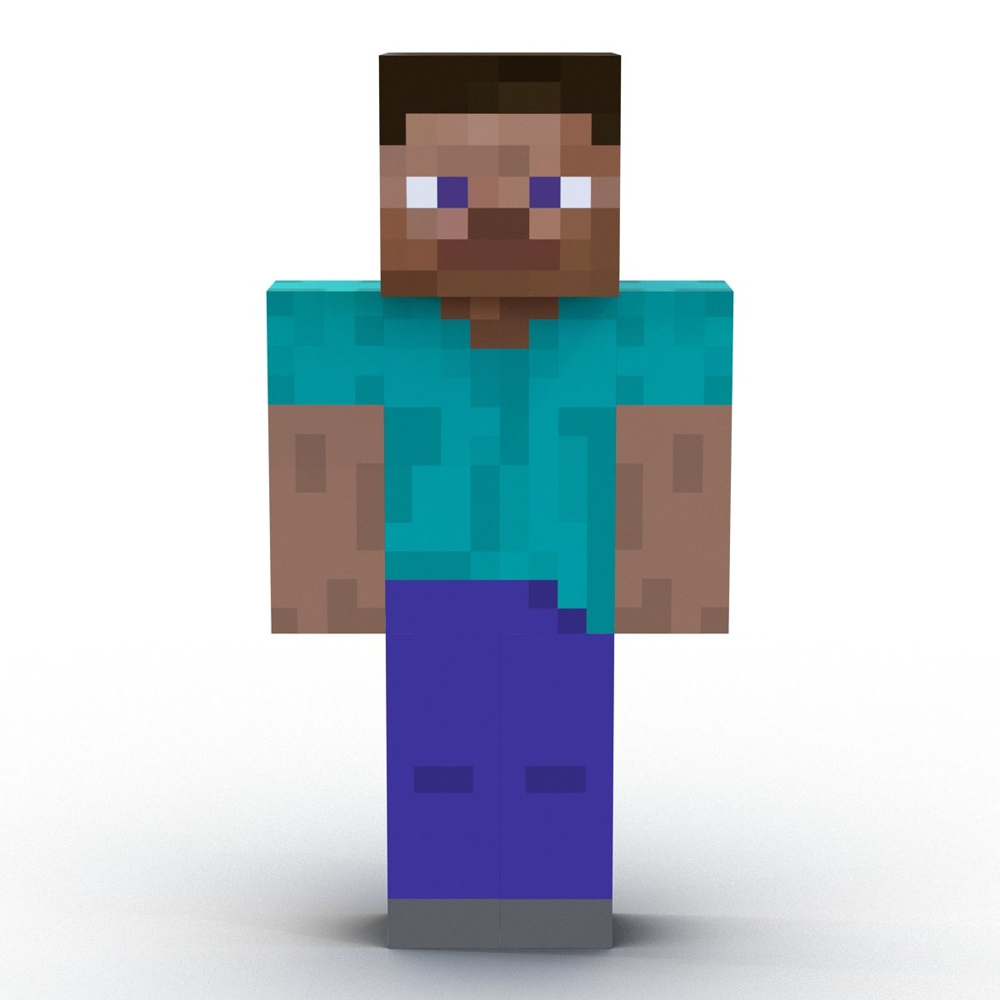

Steve to domyślna postać gracza w Minecraft.
Reprezentuje osobę, która eksploruje świat,
zbiera surowce, buduje konstrukcje i walczy z potworami.

Jak powstał?
Steve został stworzony przez Markus Persson
(znanego jako „Notch”) na początku prac nad Minecraftem
w 2009 roku. Początkowo był prostym modelem postaci,
który miał służyć jako awatar gracza.
Co robi?
Eksploruje świat gry.
Wydobywa surowce (np. drewno, kamień, diamenty).
Buduje domy, miasta i inne konstrukcje.
Tworzy narzędzia oraz przedmioty.
Walczy z potworami i przetrwa w trybie survival.
5 szczególnych cech Steve’a
Kwadratowy wygląd
jest zbudowany z bloków, tak jak cały świat Minecrafta.
ża siła –
potrafi nosić ogromne ilości materiałów i przedmiotów.
Wszechstronność –
może budować, kopać, walczyć, hodować zwierzęta i
tworzyć przedmioty.
Brak ustalonej historii –
gracz sam tworzy jego przygody.
Rozpoznawalny strój –
niebieska koszulka, granatowe spodnie i brązowe włosy.